GovReady
Security Control Compliance Server Presentation
Department of Homeland Security Science & Technology
2017 Cyber Security R&D Showcase and Technical Workshop
| Slide | Speaker - Greg Elin |
|---|---|
| 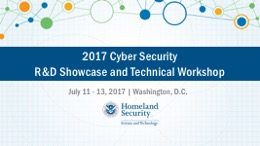 |
Main stage showcase presentation at 2017 DHS Cyber Security R&D Showcase and Technical Workshop, July 11 - 13, 2017, Mayflower Hotel, Washington, DC. |
Introduction |
|
| 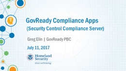 |
Thank you. I’m Greg Elin. I’m the founder of GovReady PBC. It makes sense that this presentation on compliance would be one of the last talks of the day because compliance is always one of the last things we talk about. It was just three years ago that I heard about DHS S&T and attended my first Cyber Showcase. I had recently left my appointment as the Chief Data Officer at the Federal Communications Commission because FISMA compliance was the primary constraint on how fast we could innovate. I wanted to change that and I never ever wanted to be told again I couldn’t use a great technology because it wasn’t compliant. So it’s great to be here presenting our funded research on automating security compliance. Thank you Dr. Doug Maughan and Dr. Dan Massey, my recently retired program manager, and my new program manager, Vincent Sritapan. |
|
GovReady is a Public Benefit Corporation. A public benefit corp is a for profit c-corp with a specific public benefit mission that can be consider in addition to profits when making decisions. Our mission is lowering the cost of innovation in digital services to citizens. We were founded in 2014. We help system integrators automate compliance for federal and state government and the DoD. We are active in the compliance as code community. |
|
| 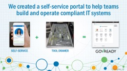 |
We’ve created a self-service portal to help teams build and operate compliant IT Systems. Our software does for compliance what tax prep software does for filing taxes. |
The Problem |
|
| 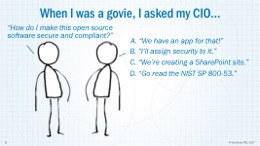 |
When I was govie, I asked my CIO: "How do I make this great piece of open source software secure and compliant?" How do you think the person in charge of information technology replied. Did he say:
(D). The head of IT told me to go read a 460 page document. |
| 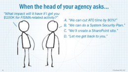 |
Let’s consider another hypothetical. Imagine yourself as a C-Level IT executive. One day your boss, the head of your agency asks: "What impact will it have if I get you $100K for FISMA-related activity?" How would you answer?
|
| 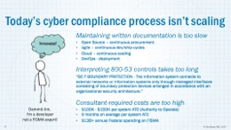 |
The fact is, today’s cyber compliance process isn’t scaling. Maintaining written documentation is too slow for the continuous development and delivery nature of modern IT. Our compliance needs to keep pace with the velocity of open source, cloud, agile, and DevOps. Compliance isn’t scaling because interpreting 800-53 controls takes too long. We are told to go read the NIST SP 800-53 and figure out what hundreds of controls really mean to the IT system we are building, controls like SC-7 BOUNDARY PROTECTION which reads in part - "The information system connects to external networks or information systems only through managed interfaces consisting of boundary protection devices arranged in accordance with an organizational security architecture." Finally, compliance isn’t scaling because our consultant-required unit costs are too high. Our only PKI of compliance is a $100K – $150K SSP and ATO that takes 9 months on average to complete leading us to spend billions annually on FISMA-related activities. |
| 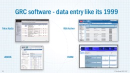 |
Existing Governance, Risk and Compliance, or GRC, software has had little impact on the time it takes for a new system to obtain an ATO. Telos Xacta, RSA Archer, eMASS and CSAM are not exactly known for ease-of-use or making compliance simpler. These packages require days or weeks of training to learn how to use and are essentially just repositories of control descriptions and artifacts. Our experts know FISMA, but don’t know our systems. Our developers know our systems, but don’t know FISMA. We are still spending our ISO and developer time interpreting and re-interpreting 800-53 controls to a system and creating by hand implementation descriptions and artifacts. |
| 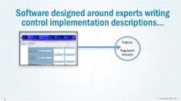 |
It should come as no surprise that GRC software designed around experts is only being used in government and regulated industries who spend significant budgets on compliance. |
| 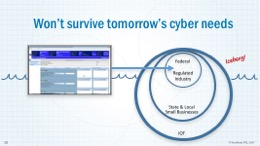 |
Expert-required compliance software won’t scale to tomorrow’s cyber needs of state and local governments to protect critical infrastructure, of small businesses to protect their data, and all of us being able to trust the Internet of Things. |
The Solution - Compliance Apps |
|
| 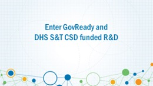 |
This is what our funded research is about. How can we deliver compliance as fast as we deliver code? How does compliance as code work? |
| 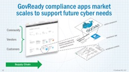 |
The answer is compliance apps. GovReady compliance apps map system components to compliance controls. Think of each compliance app as a re-usable data package defining which controls are satisfied by a system component. The compliance apps are run on GovReady’s open source expert system to guide teams through building secure and compliant IT systems. This approach enables a scalable supply chain of shared, re-suable, compliance paperwork building blocks that do not reveal proprietary details of our individual systems. |
| 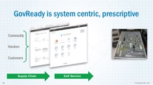 |
The compliance apps model makes it almost trivial to answer the question how do I make this software compliant? For any given type of IT system, be it a Drupal web site or a Windows network, an organization can easily proscribe the components (i.e., compliance apps) needed to make the system compliant. Think of it like a tool drawer with cutouts reveals at a glance the tools needed for the job—and which ones are present or missing. Even better, each tool can provide evidence of it proper use. |
| 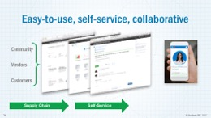 |
Compliance apps can also contain the data to power easy-to-use, self-service assessments that guide teams step-by-step through answering questions related to their system and stored in a relational database. |
| 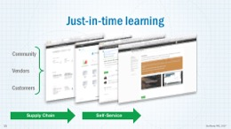 |
We can even embed within the apps multi-media tutorials to provide just-in-time learning. |
| 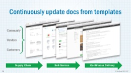 |
The compliance apps contain content snippets and templates that are combined together to automatically and continuously generate up-to-date System Security Plan and other compliance artifacts. The resulting control descriptions and artifacts can even be exported and imported into your existing GRC software. |
Quick Demo |
|
| 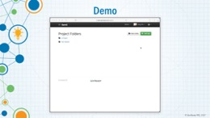 |
(This slide features a 90 second pre-recorded video demonstration.) |
|
Our portal software is open source, and ready for preview. We are developing compliance apps partners. You can learn more at GitHub and for a real quick start access our Docker version. |
|
Progress So Far |
|
| 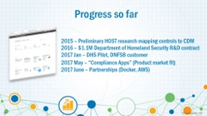 |
Our progress so far:
|
| 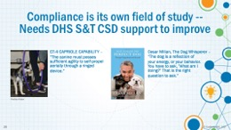 |
At GovReady we embrace the fact compliance is not security, but is its own of field study; the study of attestation and verification at scale. And this field needs DHS S&T CSD’s continued support to improve. Telling us "the canine must possess sufficient agility to self-propel aerially through a ringed "" sheds no light on how we train our dog to jump through a hoop. Every episode of the Dog Whisperer provides the same lesson: the dog does not respond to what we say, but how we act. To do compliance faster better cheaper, we need to ways to act compliantly that are better faster cheaper. |
Visit GovReady |
|
| 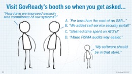 |
If you agree that our compliance apps are a major innovation in improving and automating cyber compliance, visit our booth this afternoon to discuss a pilotso the next time you get asked, "How have we improved the security and compliance of our systems?" Your answer will be:
And investigators, sign up for our online workshop where we help you create a compliance app for your system component. |
| 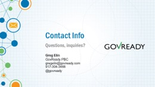 |
I'll be happy to answer any questions. |